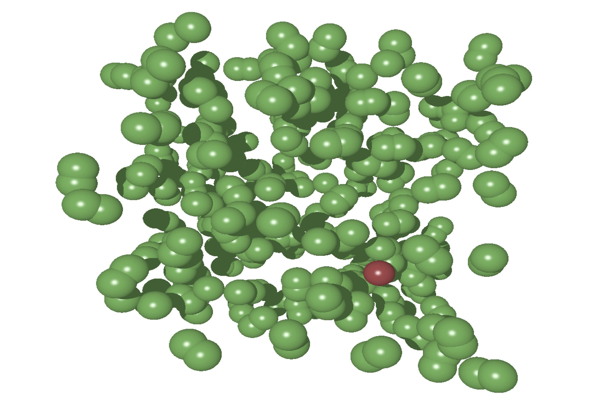
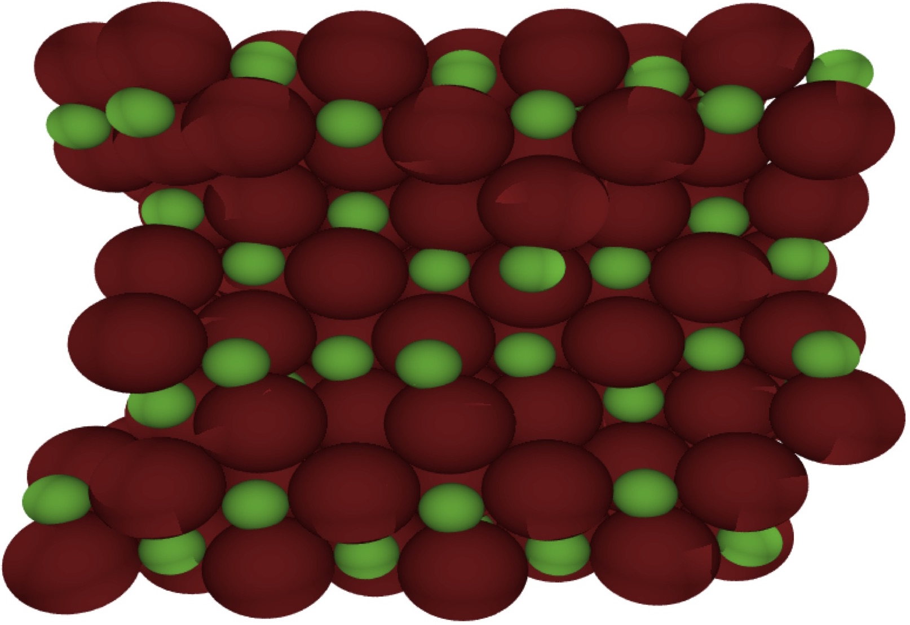

Elastic networks

I am interested in questions such as: how do elastic
networks respond to being stretched, compressed or sheared?
How can we tune this response and potentially build novel
materials?
Active force-dipoles

A great deal of research has focused on the motion
of self-propelled active particles. When placed in a fluid
they will collide with the fluid molecules, creating a
hydrodynamic flow-field. My research focuses on how these
flow-fields then affect the motion of a passive
particle.
Colloidal particles

How does the shape of the particles in a colloidal
suspension affect its phase behaviour? How about their
elastic and structural properties?